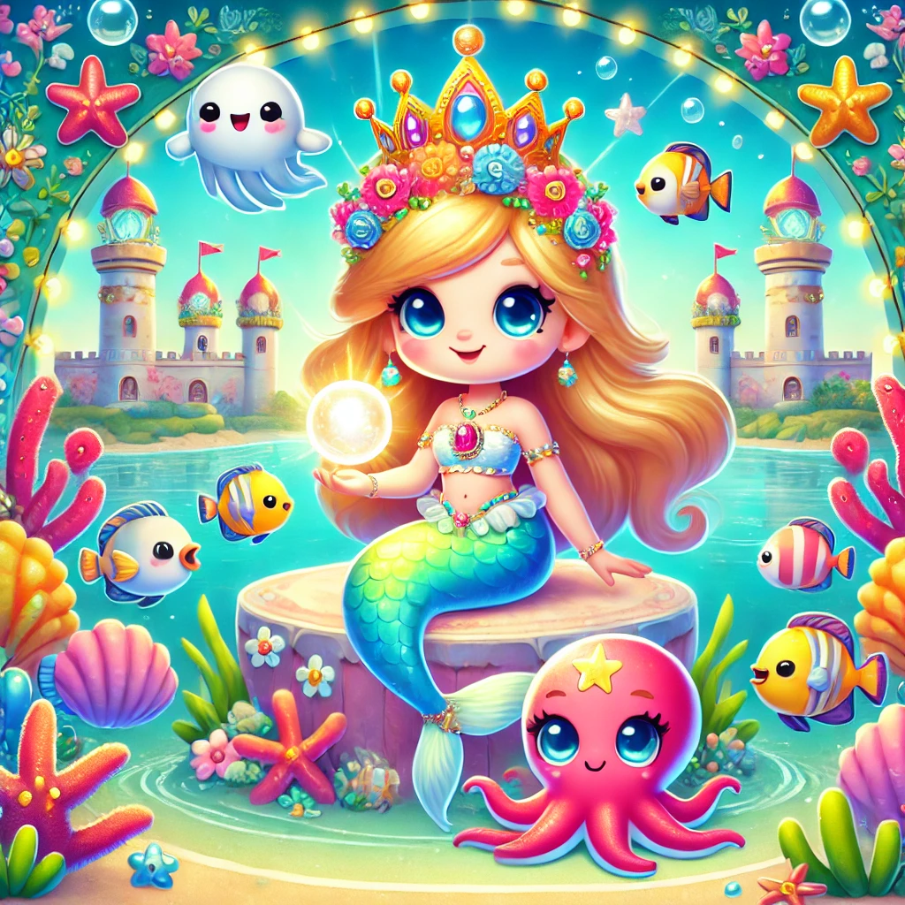

Maris y la Perla Mágica

Había una vez, en un reino submarino llamado Aqualuna, una hermosa reina sirena llamada Maris. Maris tenía una larga melena dorada y una cola de sirena que brillaba con los colores del arco iris. Era conocida en todo el reino por su sabiduría y bondad.
Maris vivía en un magnífico palacio de coral, rodeado de jardines submarinos llenos de flores brillantes y peces de todos los colores. Su reino era un lugar de paz y felicidad, pero un día, una terrible tormenta submarina amenazó con destruir todo.
Con valentía y determinación, la reina Maris decidió salvar su reino. Reunió a los mejores magos y guerreros del mar y les pidió que la ayudaran a calmar la tormenta. Juntos, nadaron hacia el corazón de la tempestad, enfrentándose a fuertes corrientes y enormes olas.
En el centro de la tormenta, descubrieron una perla mágica que había sido robada de su lugar sagrado, causando el caos en el mar. Maris usó su sabiduría y magia para devolver la perla a su lugar, calmando instantáneamente la tormenta.
El reino de Aqualuna volvió a ser un lugar de paz y alegría. Los habitantes del mar celebraron a su valiente reina con un gran festival, agradeciéndole por su coraje y liderazgo.
Desde ese día, Maris fue recordada no solo como una reina sabia y bondadosa, sino también como una heroína que salvó su hogar. Y así, el reino submarino de Aqualuna vivió feliz para siempre, bajo la protección de su querida reina sirena.
Y colorín colorado, este cuento se ha acabado. Buenas noches, Alondra. ¡Dulces sueños!